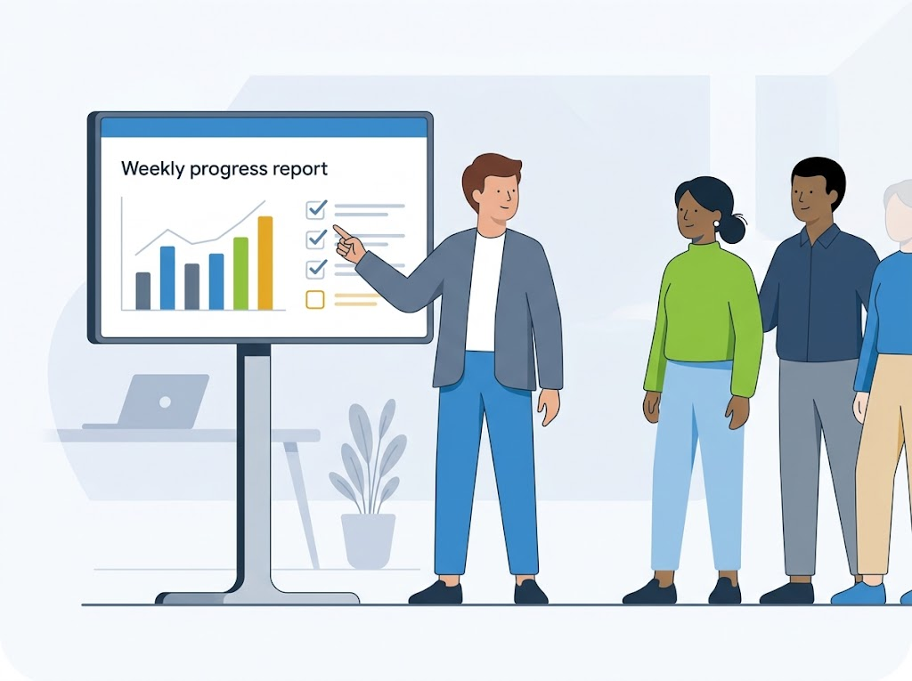
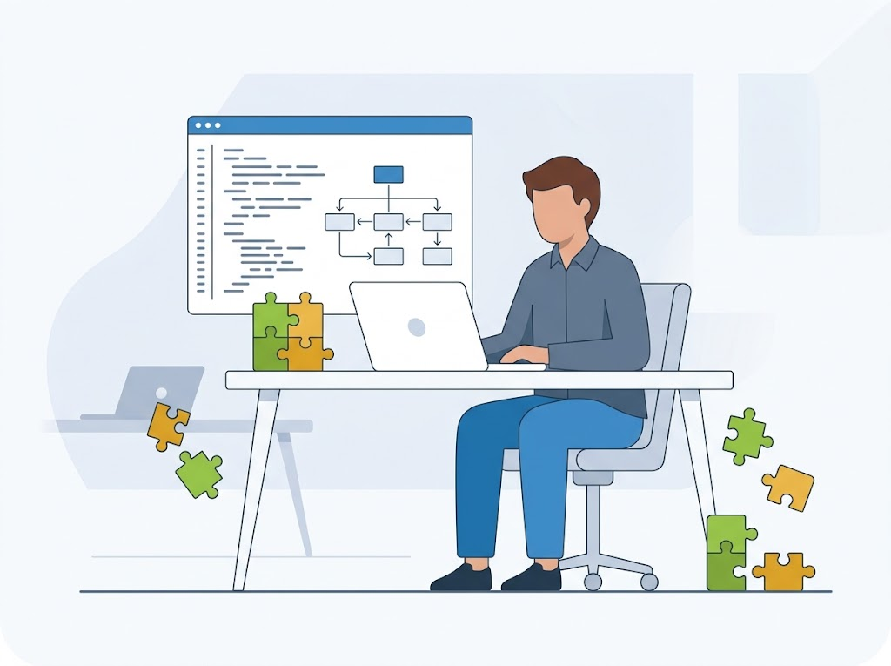
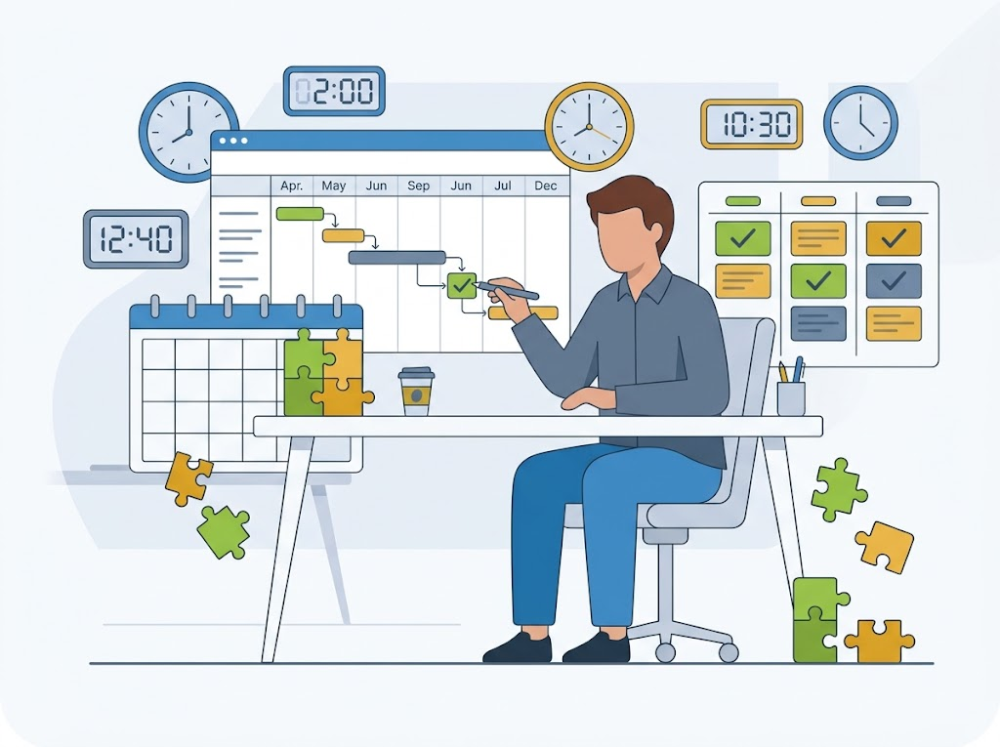
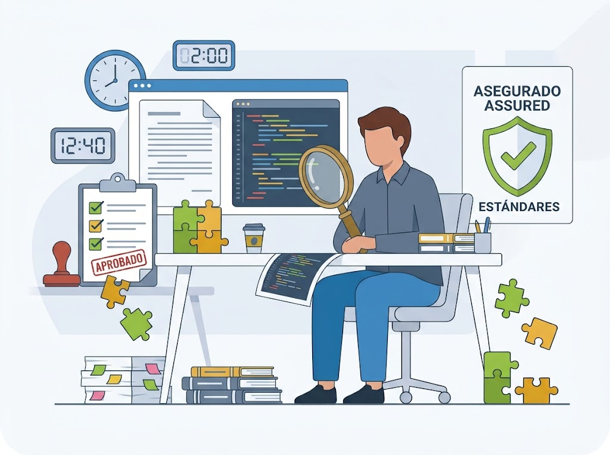
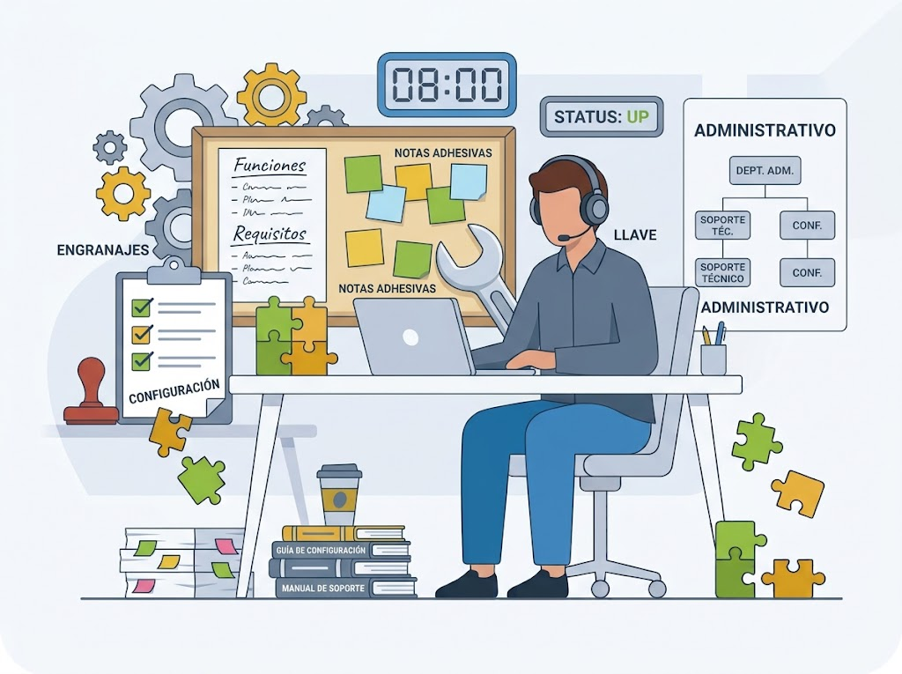
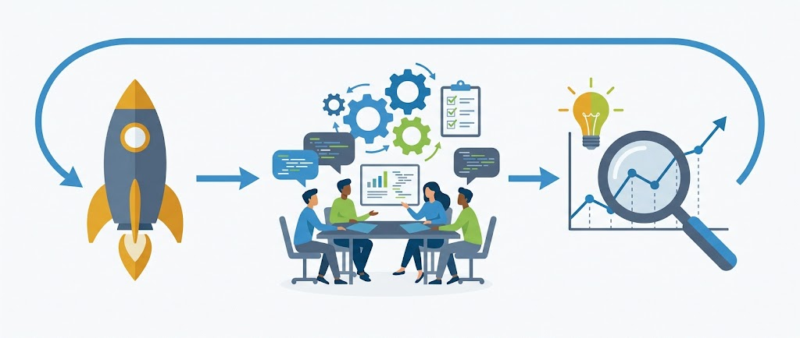
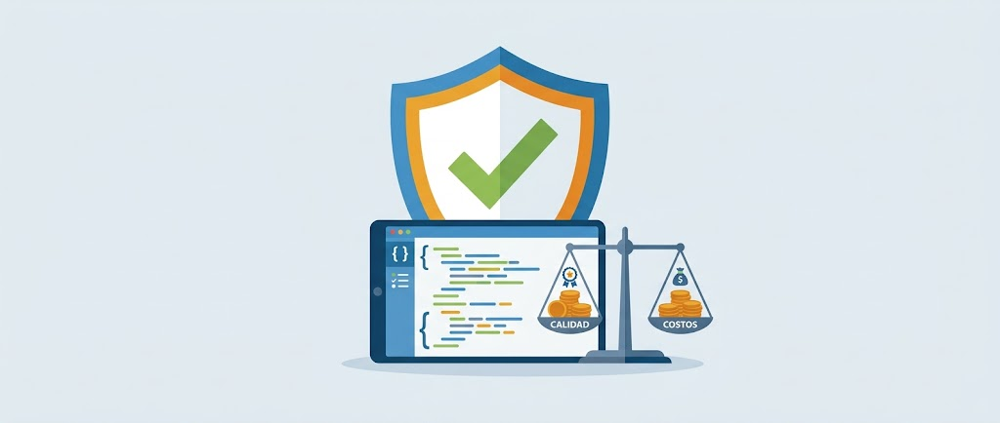
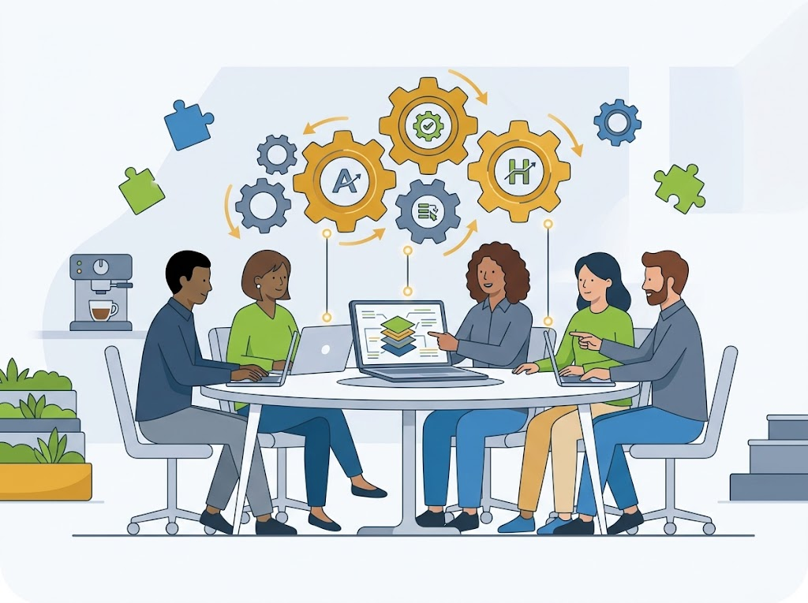
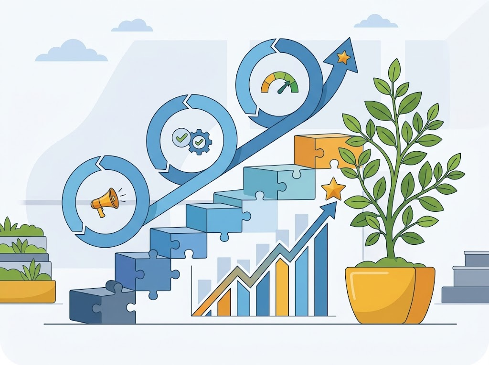

👤
PSP: el desarrollador
Marco para que cada persona defina sus procesos, planee su trabajo, le dé seguimiento y administre la calidad de sus productos.
Leer másEl Personal Software Process (PSP) y el Team Software Process (TSP) ayudan a planear, medir y entregar software con calidad.
PSP lleva la disciplina al desarrollador individual. TSP la lleva al equipo completo.
Marco para que cada persona defina sus procesos, planee su trabajo, le dé seguimiento y administre la calidad de sus productos.
Leer másLleva los principios del PSP al equipo para formar grupos de alto desempeño que planean y establecen sus propias metas.
Leer másPensadas para organizaciones con CMMI e ISO. Cada una dura 64 horas en 10 días. Meta: cero defectos y entrega a tiempo.
Leer más
Dirige al equipo, asegura el registro de datos y hace los reportes semanales de avance.

Guía el diseño y desarrollo técnico del producto.

Apoya la planeación, la calendarización y el seguimiento de actividades.

Administra el plan de calidad, define estándares, modera inspecciones y revisa artefactos.

Dirige el análisis de requerimientos, gestiona la configuración y da soporte técnico y administrativo.

| Aspecto | PSP | TSP |
|---|---|---|
| Enfoque | El ingeniero individual | El equipo de trabajo |
| Qué es | Marco de procesos para definir, planear, dar seguimiento y gestionar la calidad del trabajo propio | Modelo que combina los principios del PSP con el trabajo colaborativo en equipo |
| Objetivo | Controlar y mejorar el desempeño individual (el personal es el 70% del costo del desarrollo) | Formar equipos de alto rendimiento que entreguen productos de clase mundial en ciclos bien definidos |
| Estructura | 4 niveles: PSP 0, 1, 2 y 3 | 3 fases: lanzamiento, ejecución y postmortem |
| Ventajas | Más productividad y calidad, menos errores de codificación, mejores fortalezas y áreas de mejora | Más calidad, menos defectos, menos tiempo y costo de pruebas, práctica de ingeniería madura |
| Desventajas | Tensión por sentirse controlado y tiempo para registrar datos | Exige compromiso, mucha documentación y que todos tengan PSP |
| Certificación | Para organizaciones con CMMI e ISO. Meta: cero defectos en el plazo previsto | Verifica que la organización adopte TSP de forma adecuada |
| Costo | $23,916.00 MXN | $263,916.00 MXN |
| Duración | 64 horas en 10 días | 64 horas en 10 días |
PSP mejora al individuo. TSP mejora al equipo.

Maximizar la calidad del software y minimizar costos.

Integrar equipos independientes de alto rendimiento.
Mostrar cómo monitorear y motivar a sus equipos.

Acelerar la mejora continua en las organizaciones.
Profesionales de TI de empresas de software y servicios.
Servidores públicos vinculados a áreas de tecnologías de la información.
Docentes universitarios de programas de pregrado afines a TI.
De ingeniería de sistemas o software, desde 6.º semestre y con al menos un lenguaje de programación.
En el desarrollo de programas, la definición de requerimientos, la documentación, las pruebas de sistemas y el mantenimiento.
Lograr productos de calidad con cero defectos y entregados en la fecha propuesta.
Se complementan en tres niveles: CMMI en la organización, TSP en el equipo y PSP en el individuo.
Supera las misiones del videojuego para repasar lo que aprendiste sobre PSP y TSP.
Guía a los ingenieros de software para definir, planear, dar seguimiento y gestionar la calidad de su propio trabajo. Se aplica en desarrollo de programas, requerimientos, documentación, pruebas de sistemas y mantenimiento. Sus 4 niveles van de la línea base (PSP 0) al proceso cíclico (PSP 3).
CerrarCombina los principios del PSP con el trabajo en equipo para formar y poner en marcha equipos de alto rendimiento que entreguen productos de clase mundial en ciclos de desarrollo bien definidos.
CerrarPSP: empresas como Tecnología de Gestión y Comunicación, SAITOSOFT, UTL, i-place y T-Systems México. TSP: la evaluación organizacional verifica que la organización lo adopte bien y refleje su capacidad real.
Cerrar